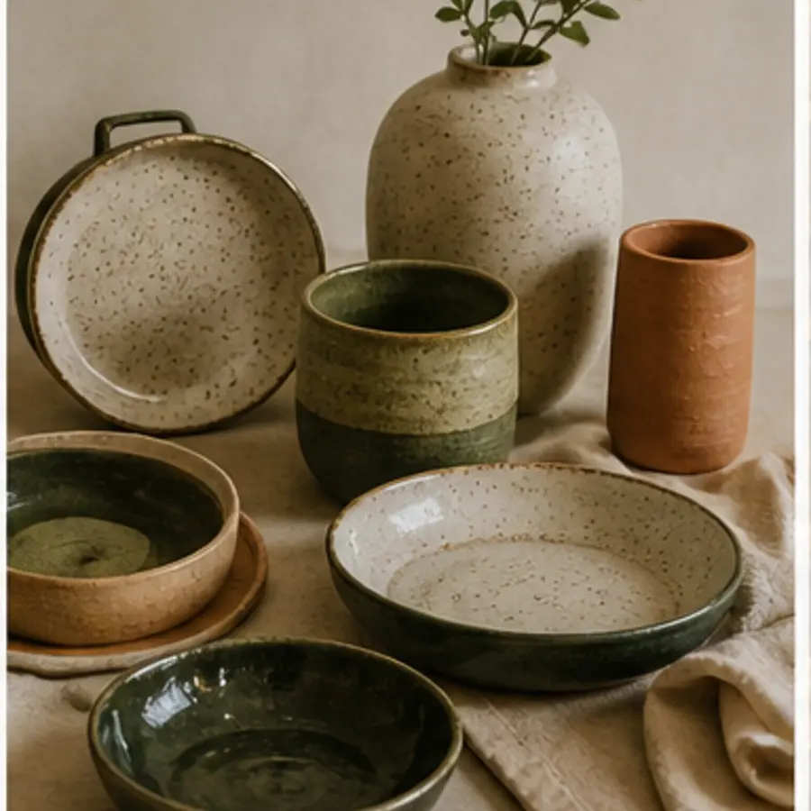
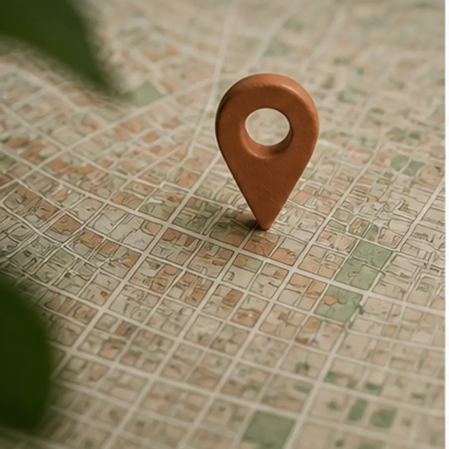
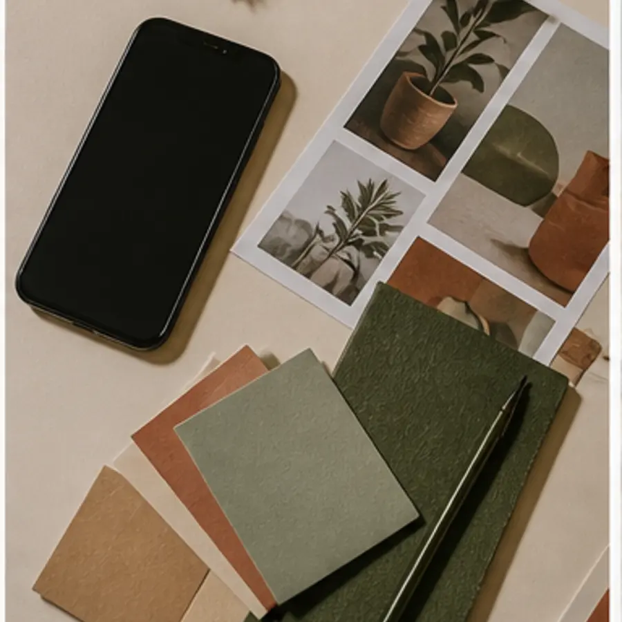
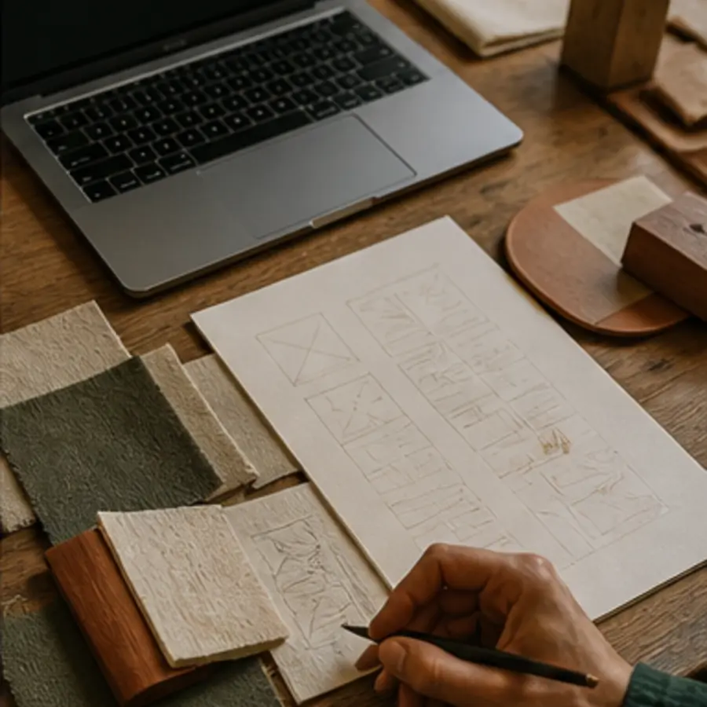

01 · Vuestra esencia
Historia de la empresa
Cómo empezó todo, vuestra trayectoria, valores y aquello que hace único al negocio.
- Origen y valores
- Trayectoria
- Hitos importantes
Cómo empezó todo, vuestra trayectoria, valores y aquello que hace único al negocio.
Presentamos a las personas que dan vida al proyecto para generar cercanía y confianza.
Nombre Apellido Fundador/a
Productos organizados con fotografías, descripciones, variantes y precios si los necesitáis.
Opiniones reales y valoraciones destacadas para enseñar la experiencia de otros clientes.

Dirección, horario, indicaciones y mapa interactivo para llegar sin complicaciones.
Resolvemos las dudas habituales antes de que el cliente tenga que preguntar.

Teléfono, WhatsApp, correo y enlaces directos a todas vuestras redes.

Plantilla de trabajadores, tarifas, casos de éxito, documentos, promociones o cualquier contenido propio de vuestro negocio.
Si lo necesitáis, lo diseñamos.Cada sección se adapta a teléfono, tablet y ordenador: textos legibles, botones cómodos y contenido ordenado.